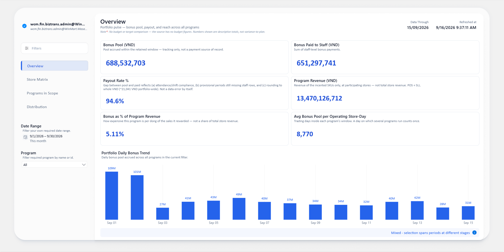
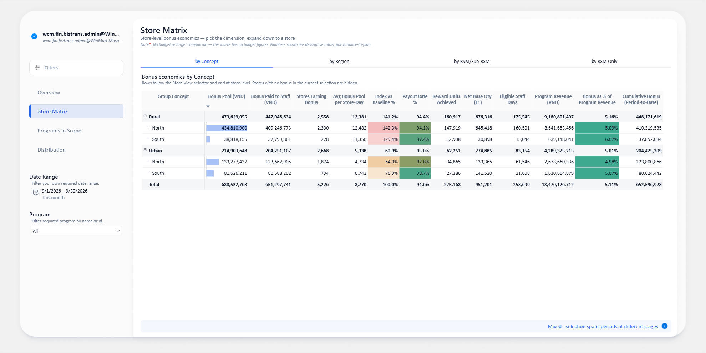
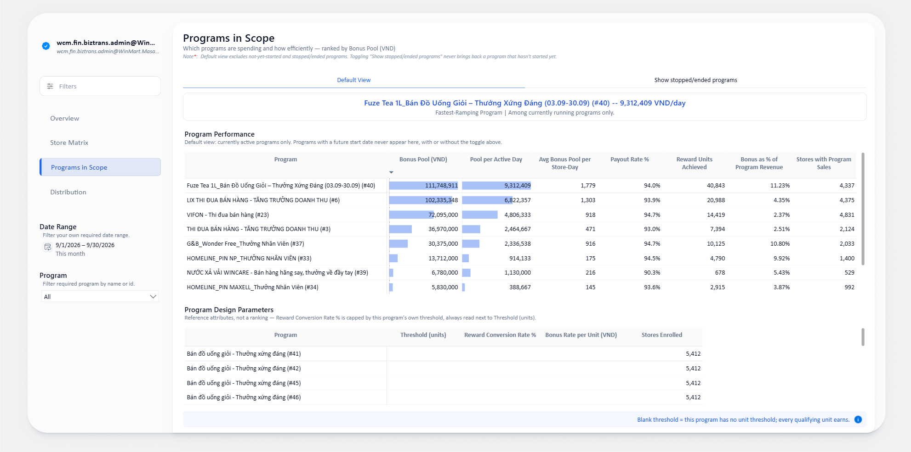
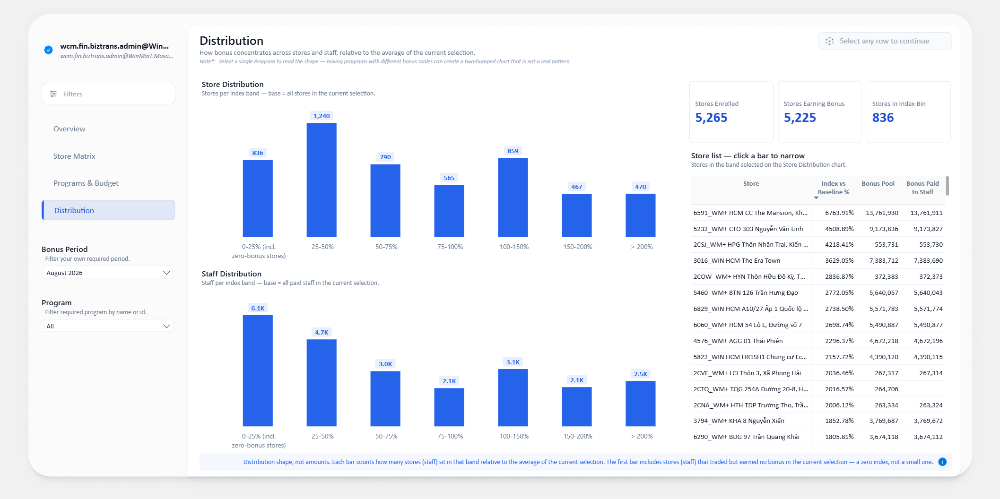
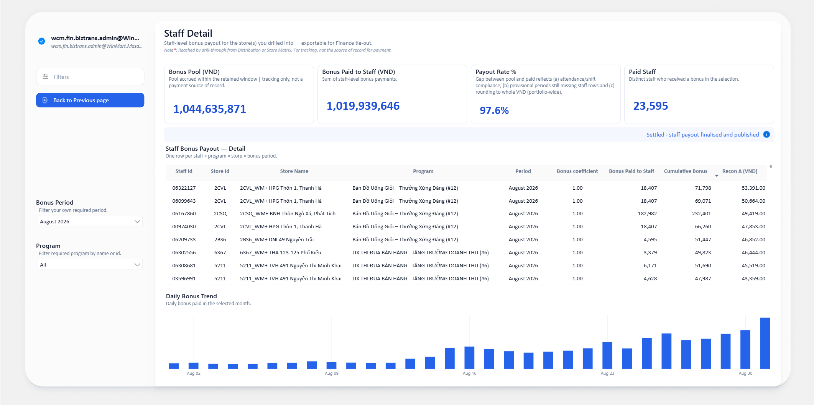
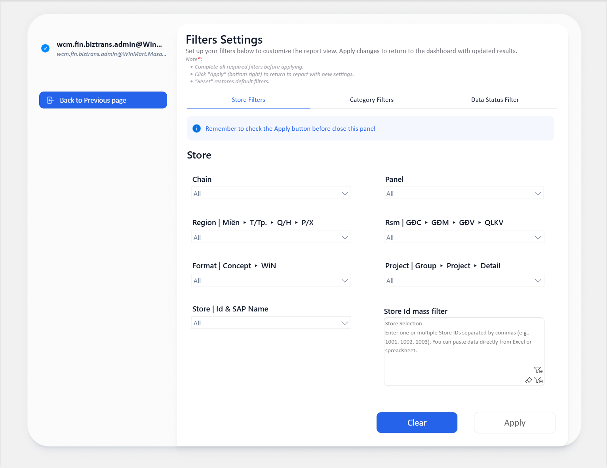
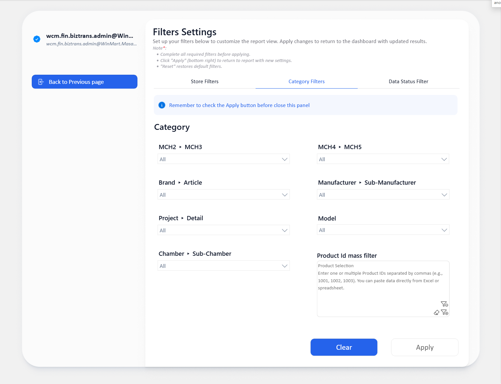
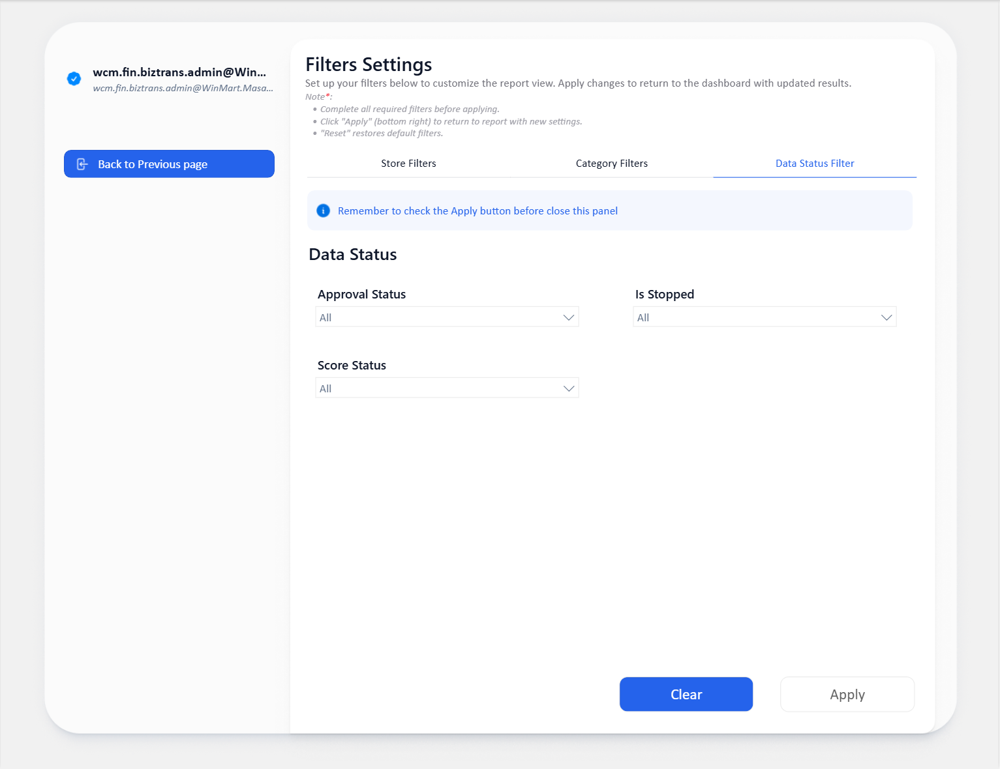

Hướng dẫn đọc báo cáo thưởng thi đua bán hàng theo sản phẩm — dành cho Finance. Đọc mục 01 và 02 trước (thuật ngữ + lưu ý khi đọc), rồi mới đi theo luồng 4 trang.
Chương trình thưởng thi đua đang tiêu bao nhiêu tiền, tiền đó có tới tay nhân viên không, và nó dồn vào đâu?
Tên cột trên báo cáo giữ tiếng Anh; lướt qua bảng này một lượt trước khi mở báo cáo.
| Tên trên báo cáo | Nghĩa | Lưu ý |
|---|---|---|
| Bonus Period | Kỳ xét thưởng, theo tháng dương lịch. | Là bộ lọc thời gian duy nhất của cả 4 trang. Chọn nhiều tháng thì các chỉ số tính theo tháng sẽ để trống. |
| Bonus Pool (VND) | Quỹ thưởng chương trình tích luỹ được cho cửa hàng trong kỳ. | Là số theo dõi quỹ, không phải chứng từ đã chi trả. |
| Bonus Paid to Staff (VND) | Tổng thưởng đã chi cho nhân viên. | Tháng chưa chốt thì số này còn tăng tiếp. |
| Payout Rate % | Phần quỹ đã tới tay nhân viên. | Trần thực tế là 100%; chỉ cần soi phía thấp bất thường. |
| Pool vs Staff Δ (VND) | Phần quỹ chưa phân bổ được cho nhân viên. | Với tháng chưa chốt, đây là phần đang chờ xử lý, không phải thất thoát. |
| Target per Store (VND) / Target per Staff (VND) | Hai ô nhập trên Overview để đổi mức target — mặc định 1.100.000 / 275.000, chỉ nhập theo bội số 1.000. | Đổi số ở đây là hỏi thử "nếu target là X thì đạt bao nhiêu", không phải target chính thức đang áp dụng. |
| Bonus per Store per Month (VND) | Thưởng bình quân một cửa hàng một tháng. | Là quỹ thưởng chia cho số cửa hàng đã nhận thưởng — chưa phải tiền đã chi. Muốn xem phần đã tới tay nhân viên thì đọc Payout Rate %. |
| Bonus per Staff per Month (VND) | Thưởng bình quân một nhân viên một tháng. | Là tiền đã chi chia cho số nhân viên đã nhận thưởng, nên không so thẳng với dòng trên. |
| Program Revenue (VND) | Doanh thu của đúng những SKU được thưởng, tại cửa hàng/ngày có tham gia. | Không phải tổng doanh thu cửa hàng — đừng so với doanh thu trên báo cáo bán hàng. |
| Bonus as % of Program Revenue | Tiền thưởng trên mỗi đồng doanh số mà nó thưởng. | Mỗi chương trình có mặt bằng riêng, nên chỉ so trong cùng một chương trình. |
| Index vs Baseline % | Mức thưởng của một cửa hàng so với mặt bằng của nhóm đang xem. 100% = đúng bằng mặt bằng. | Chỉ dùng ở trang Distribution. Cửa hàng so trên thưởng bình quân một ngày cửa hàng mở cửa; nhân viên so trên thưởng bình quân một nhân viên. Mặt bằng tính lại theo vùng đang lọc, nên lọc khác đi thì cùng một cửa hàng ra số khác. |
| Cumulative Bonus (Period-to-Date) | Luỹ kế thưởng của một nhân viên từ đầu kỳ tới ngày mới nhất. Chỉ tính trong một kỳ. | Đọc theo từng nhân viên (trang Staff Detail). Nếu một nhân viên có phát sinh ở hai cửa hàng trong cùng tháng, số này là luỹ kế cả tháng của nhân viên đó, không phải phần tại riêng một cửa hàng — nên đừng cộng cột này qua nhiều dòng. Muốn biết tiền theo cửa hàng, dùng Bonus Paid to Staff (VND). |
| Stores Earning Bonus | Số cửa hàng nhận được ít nhất 1 VND thưởng trong tháng đang chọn. | Đếm distinct cửa hàng — không cộng theo số dòng khi một cửa hàng ở nhiều chương trình. |
| Stores Earning Bonus % | Trong số cửa hàng được giao chương trình, bao nhiêu phần trăm thực sự có thưởng. | Mẫu số là Participating Stores, không phải tổng số cửa hàng của chuỗi. |
| Budget (VND) | Ngân sách thưởng tháng, dùng chung cho cả category. | Chọn một chương trình/vùng/cửa hàng thì cột này vẫn giữ nguyên mức cả category — xem thêm lưu ý số 1. |
| Budget Utilisation % | Phần ngân sách tháng của category đã dùng tới. | = Bonus Pool ÷ Budget. Đọc là phần quỹ chung đã dùng, không phải ngân sách riêng của cửa hàng/chương trình đang xem. |
| Target Units | Sản lượng kế hoạch của category, theo tháng. | Category không có target riêng (nhóm Mix) sẽ để trống — không phải thiếu dữ liệu. |
| Units Sold | Sản lượng thực bán của các category có ngân sách. | Chỉ tính category nằm trong bảng target, không phải tổng sản lượng toàn ngành. |
| Volume Attainment % | Mức đạt sản lượng so với kế hoạch tháng. | = Units Sold ÷ Target Units. Có thể vượt xa 100% khi đơn giá thưởng thấp — không suy ra Budget Utilisation % cũng cao. |
| Planned Bonus per Unit (VND) / Actual Bonus per Unit Sold (VND) | Tiền thưởng cho mỗi unit bán ra: theo kế hoạch (Planned) và theo thực tế (Actual). | Actual = Bonus Pool ÷ Units Sold. Hai số thường lệch nhau — đọc kèm Bonus per Unit vs Plan %. |
| Bonus per Unit vs Plan % | Đơn giá thưởng thực tế đang bằng bao nhiêu phần so với kế hoạch. | = Actual ÷ Planned. Thấp không có nghĩa tiết kiệm tốt — thường vì bán vượt xa kế hoạch nên đơn giá bị pha loãng. |
| Bonus Period Status | Settled = đã chốt và công bố · Provisional = còn tạm tính · Mixed = vùng chọn trải nhiều giai đoạn. | Mixed không phải lỗi — một kỳ có thể vừa có chương trình đã chốt vừa có chương trình đang chạy. |
| Recon Δ (VND) | Chỉ số kiểm tra dữ liệu: chênh giữa số luỹ kế và tổng các ngày cộng lại. | Chỉ hiện ở dòng cuối kỳ, các dòng khác để trống là đúng. Lệch đáng kể thì báo lại cho nhóm dữ liệu. |
| Bonus coefficient | Hệ số chia quỹ cho từng nhân viên. | Cùng hệ số thì chia đều — nhiều dòng trùng số tiền là bình thường. |
| Data Through | Ngày cuối cùng có trong dữ liệu (luôn là D-1). | Khác Refreshed at. Refresh sáng nay không có nghĩa là đã có số của hôm nay. |
| Index bins (0-25% … > 200%) | Các dải mức thưởng so với mặt bằng, dùng cho biểu đồ trang Distribution. | Cột đầu gộp cả cửa hàng có tham gia nhưng thưởng bằng 0. |
| Approval Status · Is Stopped · Score Status | Ba cờ chất lượng của chương trình, lọc ở tab Data Status. | Mặc định để All. Đổi ở đây sẽ đổi số trên mọi trang. |
Ba điều dưới đây không thuộc về một cột nào, mà là cách đọc cả báo cáo.
Budget vẫn giữ nguyên mức cả category — bạn đang xem phần quỹ chung đó đã dùng, không phải ngân sách riêng.Data Through là ngày cuối cùng có số; báo cáo refresh sáng nay không có nghĩa đã có số của hôm nay.Tổng quỹ bao nhiêu, bao nhiêu tới tay nhân viên, tốn bao nhiêu trên mỗi đồng doanh số?

Bonus Pool là tổng quỹ; hai ô Target per Store/Target per Staff để thử mức mục tiêu, không phải mức chính thức đang áp dụng.Bonus Paid to Staff và Payout Rate %.Program Revenue và Bonus as % of Program Revenue.Data Through (ngày cuối có dữ liệu) khác Refreshed at (giờ làm mới).Tiền nằm ở vùng/miền/concept nào? Chỗ nào lệch khỏi mặt bằng?

Bonus per Store per Month, Store Bonus vs Target %, Payout Rate %, Staff Bonus vs Target %. Các cột tiền còn lại để trắng có chủ đích.by Concept, by Region, by RSM/Sub-RSM, by RSM Only. Bấm dấu + để bung xuống từng cửa hàng.Bonus per Store/Staff per Month — tô theo trạng thái kỳ; amber nghĩa là tháng còn tạm tính.Store/Staff Bonus vs Target % — so tương đối giữa các dòng đang hiện, không neo ở 100%.Payout Rate % — chỉ cần soi những dòng thấp bất thường.Bonus as % of Program Revenue — càng đậm màu càng tốn chi phí trên doanh số.Quỹ thưởng tháng dùng bao nhiêu, sản lượng đạt bao nhiêu so với kế hoạch?

Budget vs Actual by Category, mở sẵn tới cấp category; bấm + để bung xuống từng chương trình.Programs Ended đã chạy xong, Programs Running đang chạy, Programs Upcoming bắt đầu sau Data Through (không phụ thuộc slicer Bonus Period).Budget · Bonus Pool · Budget Utilisation % — đã dùng bao nhiêu phần quỹ tháng.Target Units · Units Sold · Volume Attainment % — bán được bao nhiêu so với kế hoạch.Planned vs Actual Bonus per Unit — thưởng mỗi unit so với kế hoạch.Budget và Target Units vẫn giữ nguyên mức cả category — xem lưu ý số 1.Category Filters làm trống toàn bộ cột target, vì quỹ không chia được theo một tập con sản phẩm.Tiền rải đều hay dồn cục? Cửa hàng nào nằm ở đuôi?

Program thì trang đọc chuẩn nhất.View staff detail để sang trang Staff Detail — đây là đường ra chi tiết duy nhất.0-25% gộp cả cửa hàng có tham gia nhưng thưởng bằng 0 — đừng đọc cả cột đó thành nhóm làm kém.Bảng phẳng để đối chiếu từng nhân viên — một dòng là một nhân viên × chương trình × cửa hàng × kỳ.

Distribution, hoặc chuột phải một dòng cửa hàng ở Store Matrix. Nút Back to Previous page đưa bạn quay lại.Bonus Period và Program ở đây không dùng chung với 4 trang chính.Cumulative Bonus (Period-to-Date) đọc theo từng nhân viên — xem mục 01.Bonus coefficient, cùng hệ số thì chia đều.Distribution.Filters Settings (nút Filters ở cột trái)


Approval Status, Is Stopped, Score Status.Apply trước khi đóng panel, nếu không lựa chọn sẽ không được áp.
Nút Clear nằm ngay cạnh và xoá sạch lựa chọn — đọc kỹ trước khi bấm.